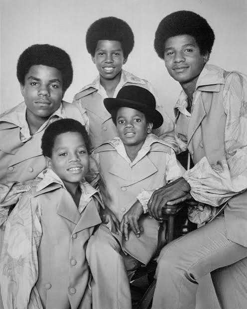
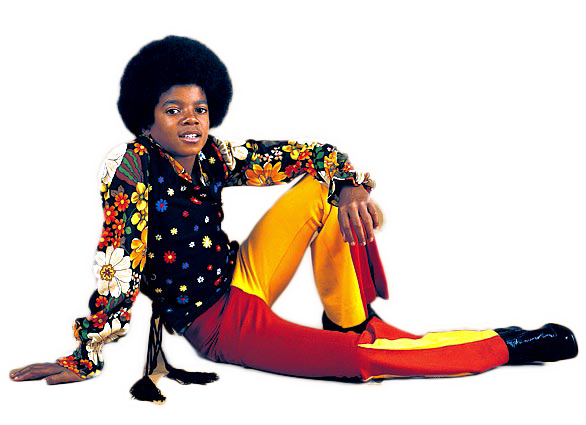

On August 29,1958 was when the famous star Michael Jackson was born. He lived in Gary, Indiana, USA on 2300 Jackson Street. He was the eighth of ten children born to Joseph and Katherine Jackson. His house was a three-room house that housed his parents and all of his siblings. His mother converted his family to become devout Jehovah's Witnesses which required Michael to participate in a strict door-to-door ministry from a young age. At the age of 5 Michael and his brother Marlon joined a band with their other brothers that their dad managed. Michael's first performence was held when he was 6 but he infact did not play the lead singer. He was originally a backup musician. By the age of 8 Michael's singing and dancing ability was promenent. Michael prusuaded his father to let him sing with Jermaine, the lead singer of the group, eventually that did happen. At the age of 8 Michael Jackson lead the named band Jackson 5 to win a local talent show at Rooseve;t High School in Gary. That win helped the Jackson 5 to get more popular. Because of the Jackson 5's popularity Joseph had strict schedule of hours where Michael and his brothers would just practice. The problem of this is Michael could never go out to have fun or other activity's to be a kid.

When Michael Jackson was 9-10 he, his brother's, and his father would travel across the Midwest performing with his brothers in adult nightclubs and cocktail lounges. When Michael was 11 the Jackson 5 signed their historic contract with Motown Records. In late 1969, the Jackson 5 released "I Want You Back," featuring an 11-year old Michael singing lead with vocals that stunned any critic in the facinity. Their song struck four consecutive number-one hits on the Billbourd charts, following was a great one ABC. They made a landmark television debut on The Ed Sullivan Show, cementing Michael as a young unprecedented musical prodigy. At 12 he started doing his own solo material while still singing with his brothers.

Micheal Jackson